2.4 What Is Browsed: A Look Under The Hood
Oz Browser displays the current information about values of variables. This information is stated by means of constraints stored in constraint stores. Constraint that describes a value of a variable can be represented as a directed graph which is shown in textual form.
Due to the properties of the Kernel Oz3, a constraint in the store can be only a conjunction of the following types of formulae:
Equations of the form
 , where
, where  and
and  are distinct variables.
are distinct variables. Equations of the form 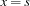, where 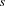 is either a primitive value or a record
 , and 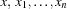 are variables.
, and 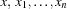 are variables. Disjunctive constraints of the form
 , where is a variable and 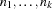 are integers which are allowed to be an element of a finite domain.
, where is a variable and 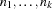 are integers which are allowed to be an element of a finite domain. Feature constraints of the form
 , where are variables.
, where are variables.
For instance, the value of the variable  from the example
from the example
X = a(1 b(r:2)) is described as follows:  Since a store keeps its constraint only up to logical equivalence in the Oz Universe, one can say that for every variable there is at most one binding for , i. e. a formula of the forms mentioned just above.
Since a store keeps its constraint only up to logical equivalence in the Oz Universe, one can say that for every variable there is at most one binding for , i. e. a formula of the forms mentioned just above.
Additionally, during the elaboration of an expression the Oz System imposes a total order '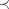' on all variables, which occur in it4, so that a constraint can only contain either if 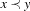, or 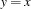 otherwise.
Informally, a graph representation of a constraint on a variable emerges when that constraint is traversed up to primitive values or yet unbound variables. Leaf nodes of a graph denote those primitive values and unbound variables, non-leaf nodes denote records, and edges of the graph model occurrences of variables in records.
A graph shown by the Browser is constructed as follows. Let us denote the set of variables to be browsed as 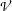, whereat initially contains the variable passed to Browse:  ; the set of already browsed variables as
; the set of already browsed variables as  5, initially
5, initially  , and the set of couples 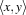 as
, and the set of couples 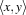 as  , initially 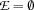. Each node carry an auxiliary label - a variable it represents; couples from denote edges between nodes labeled by its variables. Nodes of a graph are created iteratively; at each step a variable is extracted from , and one of the following rules is applied:
, initially 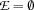. Each node carry an auxiliary label - a variable it represents; couples from denote edges between nodes labeled by its variables. Nodes of a graph are created iteratively; at each step a variable is extracted from , and one of the following rules is applied:
If the constraint store does not contain any binding for or a constraint on
, then a leaf node labeled by is created that represent the variable itself. The variable is added to . If there is an equation of the form
 , then 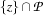 is adjoined to , and is replaced by 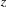 in every couple of and among nodes' labels. This step can be seen informally as ``dereferencing''; it serves for minimizing the graph representation of a constraint.
, then 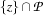 is adjoined to , and is replaced by 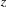 in every couple of and among nodes' labels. This step can be seen informally as ``dereferencing''; it serves for minimizing the graph representation of a constraint. If there is an equation of the form
 , where is a primitive value, then a leaf node labeled by is created that represent that value. The variable is added to .
, where is a primitive value, then a leaf node labeled by is created that represent that value. The variable is added to . If there is an equation of the form
, where is a record , then a non-leaf node labeled by is created that represent that record. The variable is added to . The set 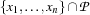 is adjoined to , and  new couples 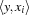 are added to .
new couples 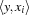 are added to . If there is a disjunctive constraint on
, then a leaf node labeled by is created that represent the corresponding finite domain. The variable is added to . If there is an feature constraint of the form 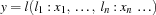, then a non-leaf node labeled by
is created that represent that partially known record. The variable is added to . The set is adjoined to , and new couples are added to .
Construction of the graph is stopped whet the set becomes empty. It is continued automatically when additional constraints are added to the store.
In the scope of this documentation, the textual representation of a (sub)graph is called (sub)term6. A (sub)term can be primitive or compound, similarly to the Oz values.
Numbers and records are shown as one would expect. Procedures, cells, chunks, spaces and threads are shown by their print names. Finite domains have a special representation: for instance, if an FD variable is constrained to the domain {1,2,3,7,8,9}, then it is shown as _{ 1..3 7..9 }. Partially known records are represented as records, but with additional ellipses just before the closing parentheses: ofs(a: 1 b: 2 ...).
Additionally, the following Oz data types are treated specially:
- Lists
have two representations - a sequence of cons cells (like
1|2|A) and the representation of well-formed lists in square brackets (like[1 2 3]). The second representation is choosen whenever a list can be decided to be well-formed when only its elements are considered. is double of the current value of the
its elements are considered. is double of the current value of the Widthbrowse limit, described in Section 2.5.- Chunks
that constructed from non-primitive values (like classes and objects) are represented as compound terms if the
Chunksrepresentation detail option is set, and if this option is not set then the string(?)is added to the representation.- Strings, Virtual Strings
are shown in readable form, i. e. by enclosed in quotes ASCII strings, if the corresponding
StringsorVirtual stringsoption, repectively, is set.Note that browsing of virtual strings is not monotonic. For instance, constraints on the variable
Sdeclare S in S = _#[101 108 108 111]is browsed in this case as
_#ello7. If the additional Oz lineS = [72]#_is feeded, the Browser changes the term's respresentation to
H#elloand not toHello; you have to issue theRebrowsecommand to obtain 'Hello'.
An extended format of print names of variables, procedures, cell, chunks, spaces and threads can be requested by setting the Variable and
StatusNames And Procedures options.
 , where 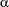,
, where 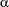,  and 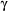 are computation spaces, so that
and 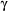 are computation spaces, so that  and 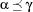 (that is, is below or equal both
and 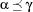 (that is, is below or equal both  and either (i)
and either (i)  , (ii)
, (ii)